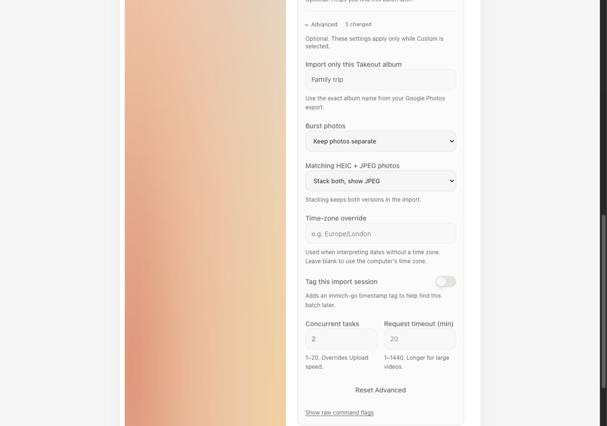
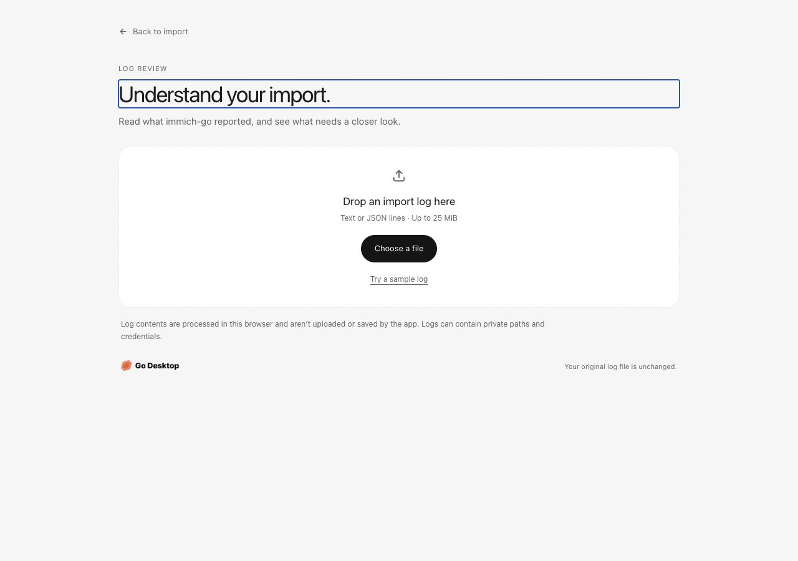
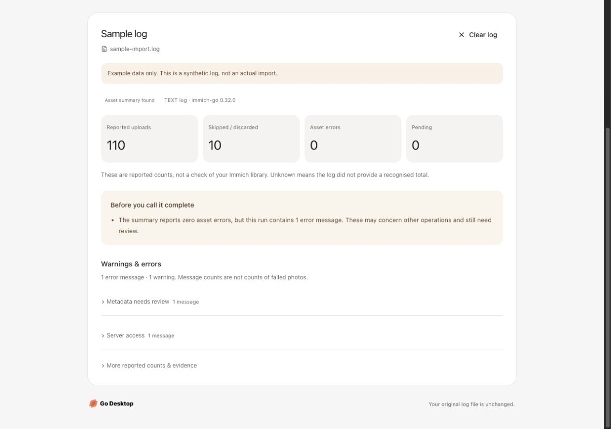
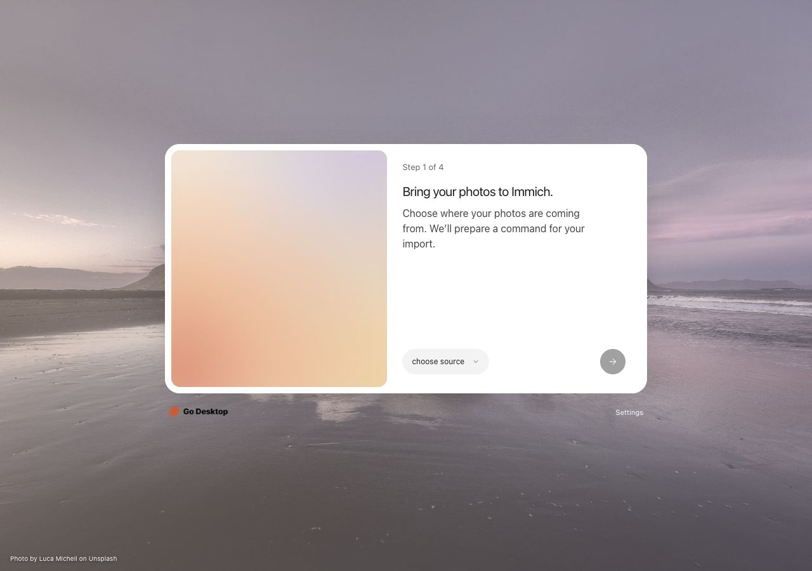
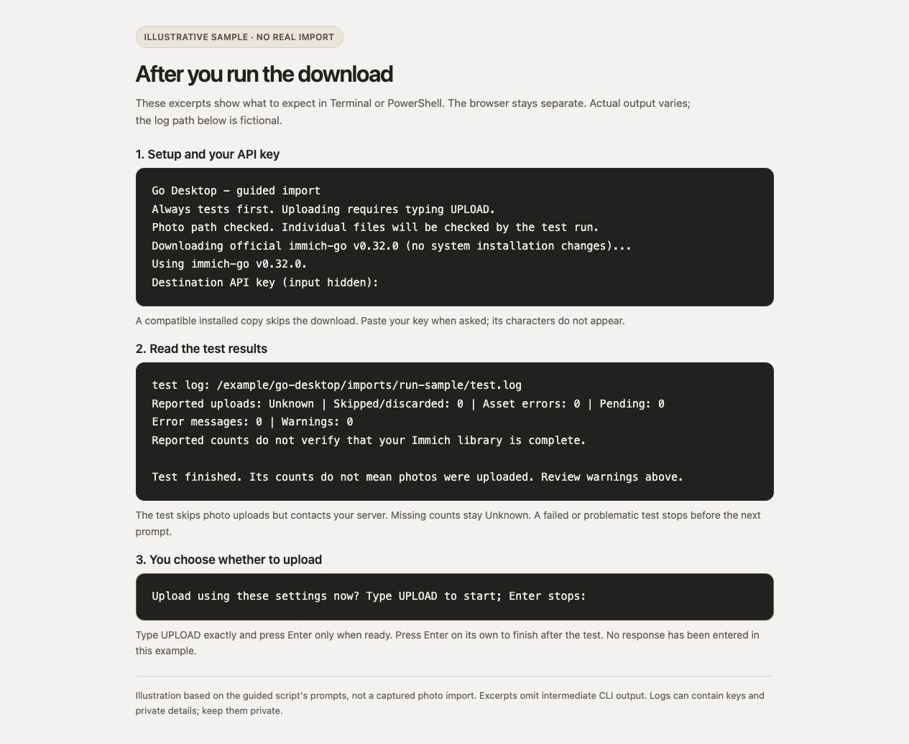

Less setup. More control. Clearer results.
The current local revision keeps four beginner steps, with a guided download and optional Advanced/log review. Captured with example details and a clearly labelled synthetic log; no real import was performed.
One guided download
Set up immich-go if needed, enter keys locally, check files and servers, then test before typing UPLOAD to begin. The manual command stays collapsed.

Advanced, when you need it
Collapsed under Custom. This scrolled view shows Takeout-specific album filtering, photo stacking, time zone, session tagging, and performance overrides.

A separate log-review view
Reached from After you run it or Settings → Help. Choose a local log or try the sample; the unfinished wizard remains in memory.

Reported counts, with context
Recognised totals, grouped issues, and a notice when error messages conflict with a zero-error asset summary. This results section is scrolled into view.

The original beginner flow
The entry screen stays minimal. Advanced controls and log review are optional, with no additional required step.

What happens after launch
Illustrative terminal excerpts: setup, hidden key input, test results, and explicit upload consent. Fictional sample output, not a real import or live browser progress.
